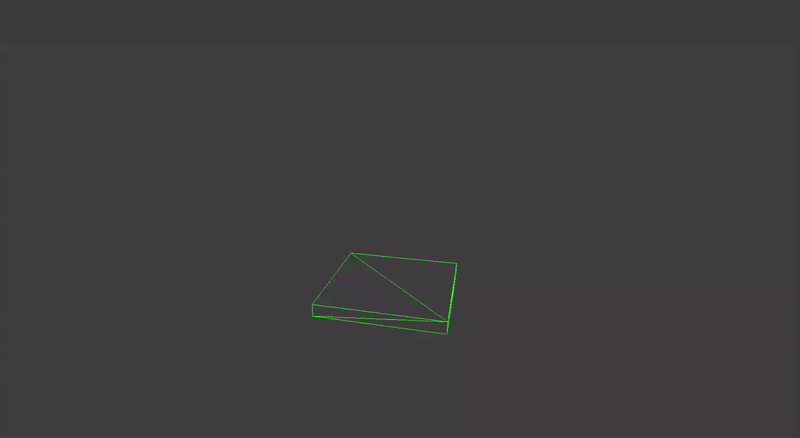

| Type: | Group projects at The Game Assembly |
| Engine: | Tonic Engine – Our group’s C++ engine built from scratch |
| Intent: | Enable the group easily develop games that use collision logic and rigid body physics simulation |
Table of Contents
- Introduction
- Project 5, Pre Production
- Project 6, Top Down ARPG
- Project 7, First Person Shooter
- Credits & inspiration
Introduction
As second year students at The Game Assembly, we have the option of building our own game engine in which we develop the 5th, 6th, 7th and 8th group projects.
There is a requirement for a physics library in project 7, but I reasoned that having a physics library integrated already from the start would make sense.
The main reason was that we could use the library as a general collision system as well.
I wanted to work with JoltPhysics in particular because I believed it would give great insight and flexibility to work with an open source solution.
I took on responsibility for implementation. Here’s how it went.
Project 5, Pre Production
The goal of the first project was to get our game engine development ready for project 2 where we’de actually make a game.
The requirements that I identified were:
- Integrate the JoltPhysics library in our engine
- Create system that bridges the JoltPhysics
- Create a simple interface for other programmers
- Render colliders
- Enable tying custom logic to collision events
…
Make it work
Project 6, Top Down ARPG
For the second project I saw two major focus areas for the physics- & collision system:
- A more systematic way of creating and updating entities with colliders and rigid bodies
- Some kind of destructables in the game – I wanted to simulate with physics
Make it right
Destructibles
Project 7, First Person Shooter
For project 3 we were heavily inspired by Anger Foot and used it as a reference game.
This put two implementation requirement on the physics- & collision system.
- Enemies should to ragdoll when they die. This is crucial feedback in Anger Foot.
- Collisions impacts need to be measured to determine if they deal damage.
Ragdolls
